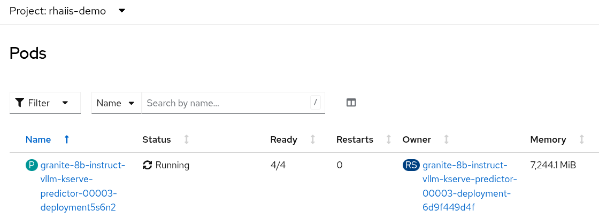
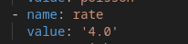
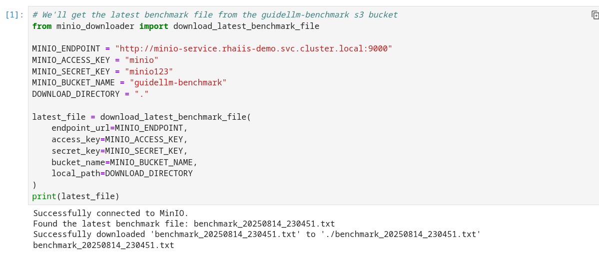
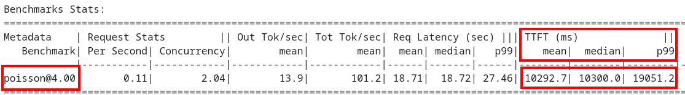
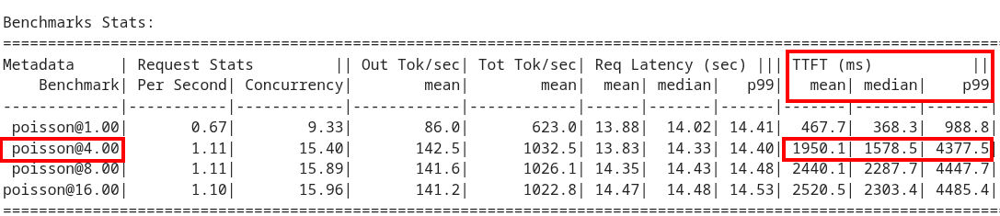

Hands-On Parameter Tuning
In this module, we will systematically adjust key vLLM parameters and re-run our benchmark to observe the impact on performance. This iterative process of "tune, measure, repeat" is the core of performance optimization.
vLLM Tuning Strategies for Granite 3.3 8B Latency
Granite-3.3-8b-instruct is a popular, powerful small-size dense model. Here are the primary avenues for optimization.
GPU Allocation & Batching Parameters: Managing Concurrency
For a "given amount of concurrent users," how you manage batching is critical to maximize GPU utilization without introducing excessive queueing latency. Let’s take a look at some of the most popular vllm configurations.
--max-model-len: The maximum sequence length (prompt + generated tokens) the model can handle.
Goal: Set this to the minimum reasonable length for your use case. Too small means requests get truncated; too large means less space for KVCache, which will impact your performance.
At startup, vllm will profile the model using this value, as it needs to ensure it is able to serve at least one request with length=max-model-len.
This is also a trade-off with the next parameter, max-num-seqs.
Tuning: If most of your requests are short, keeping max-model-len tighter can allow more requests into the batch (by increasing max-num-seqs).
max-num-batched-tokens is a highly related parameter. It’s limiting the amount of tokens the scheduler can schedule, rather than what the model can produce.
So the actual number limiting the amount of memory allocated for the model runtime is actually min(max-model-len, max-num-batched-tokens).
|
You can verify the impact of this parameter by increasing its value when starting vLLM and then observing the amount of memory reserved for KVCache. Check out the logs for our starting config:
Our starting config listed here for reference only. No need to apply it again
deploymentMode: RawDeployment
fullnameOverride: granite-8b
model:
modelNameOverride: granite-8b
uri: oci://quay.io/redhat-ai-services/modelcar-catalog:granite-3.3-8b-instruct
args:
- "--disable-log-requests"
- "--max-num-seqs=32"
- "--max-model-len=2048"-
Go to your OpenShift web console. Select the vllm project and open the logs for the granite-8b-predictor-00003-deploymentXXXXX pod.

Note the KV cache size at the top of the log
INFO 08-26 19:08:24 [gpu_worker.py:227] Available KV cache memory: 4.19 GiB INFO 08-26 19:08:24 [kv_cache_utils.py:715] GPU KV cache size: 27,488 tokens
-
Now increase the model size to
--max-model-len 4096 --max-num-batched-tokens 4096:Open workshop_code/deploy_vllm/vllm_rhoai_custom_2/values.yaml and set the below configuration:
deploymentMode: RawDeployment fullnameOverride: granite-8b model: modelNameOverride: granite-8b uri: oci://quay.io/redhat-ai-services/modelcar-catalog:granite-3.3-8b-instruct args: - "--disable-log-requests" - "--max-num-seqs=32" - "--max-model-len=4096" - "--max-num-batched-tokens=4096" -
Rerun the helm deployment
helm uninstall granite-8b && \ helm install granite-8b redhat-ai-services/vllm-kserve --version 0.5.11 -f workshop_code/deploy_vllm/vllm_rhoai_custom_2/values.yaml -
After the model is redeployed take a look at the KV Cache size in the pod’s log file. Note that the KV Cache size is now smaller than it was before.
INFO 08-26 20:01:28 [gpu_worker.py:227] Available KV cache memory: 3.99 GiB INFO 08-26 20:01:28 [kv_cache_utils.py:715] GPU KV cache size: 26,112 tokens
--max-num-seqs: The maximum number of sequences (requests) that can be processed concurrently. This is often referred to as the batch size, allowing for higher throughput.
Goal: Set this to the minimum reasonable length for your use case. When this is too high, your requests under load might get fractioned into smaller chunks resulting in higher end-to-end latency. If this is too low, you might be under-utilizing your GPU resources.
Let’s see this case in practice. Modify the script to limit the number max requests to 1 and run the benchmark pipeline with 4 requests at a time.
-
Update the workshop_code/deploy_vllm/vllm_rhoai_custom_2/values.yaml with the
max-num-seqsto 1.deploymentMode: RawDeployment fullnameOverride: granite-8b model: modelNameOverride: granite-8b uri: oci://quay.io/redhat-ai-services/modelcar-catalog:granite-3.3-8b-instruct args: - "--disable-log-requests" - "--max-num-seqs=1" - "--max-model-len=2048" -
Rerun the helm deployment
helm uninstall granite-8b && \ helm install granite-8b redhat-ai-services/vllm-kserve --version 0.5.11 -f workshop_code/deploy_vllm/vllm_rhoai_custom_2/values.yaml -
After the model redeploys update the /guidellm-pipeline/pipeline/guidellm-pipelinerun.yaml rate to 4.0.

-
Rerun the guidellm benchmark pipeline.
oc create -f guidellm-pipeline/pipeline/guidellm-pipelinerun.yaml -n vllm -
After the pipeline finishes go to your OpenShift AI workbench and open the graph_benchmarks.ipynb file. Execute the first cell to download the latest benchmark file.

-
Open the benchmark_1.txt file and the latest benchmark file (benchmark_<TIMESTAMP>.txt) you just downloaded from Minio. Go to View → Wrap Words so it’s easier to read the files.
What is happening here is that the engine is effectively being throttled and is only executing one request at a time. This is over 6x slower!

Figure 1. Latest benchmark file
Figure 2. First benchmark fileAlso notice another important indicator of an unhealthy deployment from the logs. Note the 31 pending requests:
INFO 08-14 23:05:18 metrics.py:455] Avg prompt throughput: 152.5 tokens/s, Avg generation throughput: 14.3 tokens/s, Running: 1 reqs, Swapped: 0 reqs, Pending: 31 reqs, GPU KV cache usage: 2.9%, CPU KV cache usage: 0.0%.
Especially when coupled with high waiting time (
vllm:request_queue_time_seconds_summetric from/metrics).You can access the metrics by going to your https://<INFERENCE_ENDPOINT>/metrics in a browser.
vllm:request_queue_time_seconds_sum{model_name= "granite-8b"} 35.21637320518494